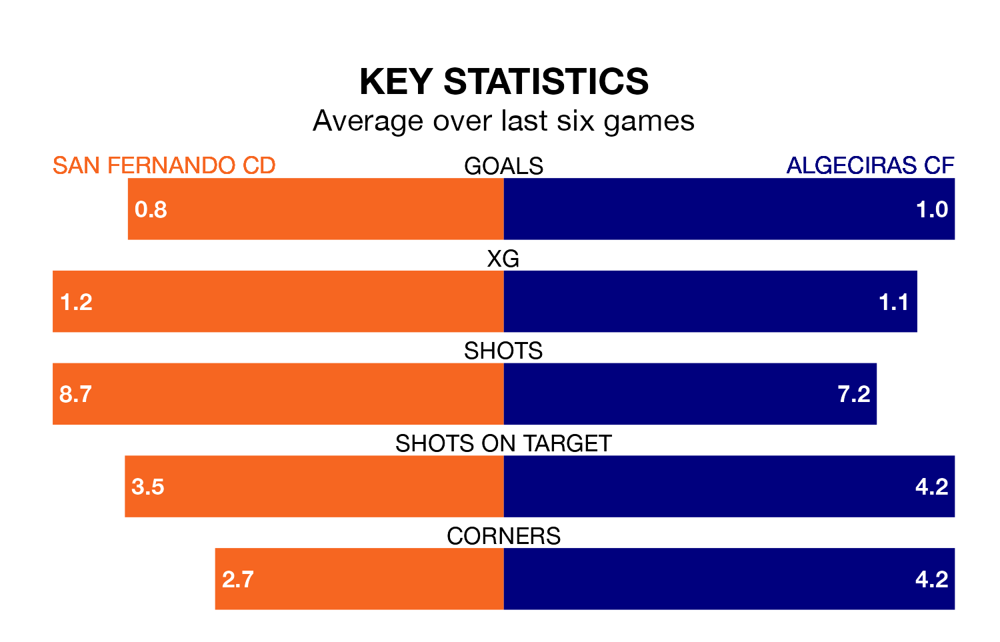

San Fernando CD host Algeciras CF on Sunday at the Estadio Iberoamericano 2010 in Primera Division RFEF Group 2.
In their last league match, on January 21, San Fernando CD drew with Ceuta 0-0 away.
Algeciras won, 1-0 at home against UD Melilla, with Javier Cueto Suárez scoring their goals.
In the last 10 years, San Fernando CD and Algeciras have played each other on nine occasions. San Fernando CD won three of them, Algeciras five, and they drew once.
On average, San Fernando CD scored 1.0 goal and Algeciras 1.3 in those matches.
Their last meeting was on September 3, when Algeciras won 2-1 at home.
With 22 goals in 20 games so far this season, Algeciras are scoring at below the league average rate with 1.1 goals per game. But they are conceding fewer than average too, letting in 19 goals at a rate of 0.9 per game.
San Fernando CD, meanwhile, are average scorers, with 1.2 goals per game. They have conceded 1.3 goals per game.
The home side are in disappointing form in Primera Division RFEF Group 2, with one win and two draws from their last six games.
With two wins and a draw over that period, the visitors' form is slightly better – they have taken seven points from 18, compared to San Fernando CD's five.
San Fernando CD are 14th in the table after 20 games, of which they have won seven and drawn three, earning 24 points.
Algeciras are seven places ahead of the hosts in seventh, with eight wins and six draws putting them on 30 points.
Updated: 09:07 (UTC), 24/01/24